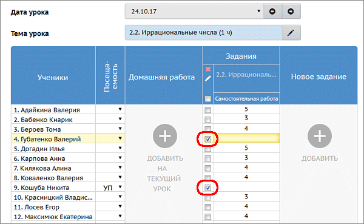

В классный журнал "Сетевого Города" можно выставить "точку" - это обязательное задание, оценка за которое пока не выставлена. Другими словами, "точка" - это задолженность ученика.
Как выставить "точку" в журнал
|
На экране Классный журнал -> Выставить оценки рядом с ячейкой для оценки можно поставить "галочку": она и будет отображаться как "точка" в главном экране классного журнала.
|
 |
"Точка" в дневнике ученика
Кроме классного журнала, "точка" отображается и в разделе "Дневник" для учащегося и родителя.
| · | Если обязательное задание, соответствующее "точке", находится на текущей неделе, - то оно отображается в таблице заданий на текущую неделю.
|
| · | Если же срок сдачи задания уже истёк, то оно выводится сверху на каждой странице дневника в блоке "Просроченные задания" до тех пор, пока задолженность не будет погашена (т.е. пока за это задание ученику не будет выставлена оценка).
|
Учёт "точки" при подсчёте среднего балла ученика
Графа "Средняя оценка" ("Средний балл") есть в главном экране классного журнала, а также во многих отчётах.
Учитываются ли "точки" при подсчёте среднего балла ученика, зависит от настройки "Способ усреднения оценок" в разделе Управление -> Настройки школы.
| · | Если задан способ усреднения оценок Среднеарифметическое, то "точки" не влияют на подсчёт среднего балла.
|
| · | Если задан способ усреднения оценок Средневзвешенное, то при подсчёте среднего балла:
|
| - точки за прошедшие даты приравниваются к "двойке", вернее, к "Минимальной отметке", которая задана в разделе Управление -> Настройки школы;
|
| - точки за сегодняшнюю дату и за будущие даты игнорируются, как будто соответствующая клетка в журнале пустая.
|
"Точка" в отчётах по успеваемости
В группе отчётов "Текущая успеваемость и посещаемость" точки учитываются следующим образом.
| · | Отчёт "Распечатка классного журнала" не отображает "точки", т.к. данный отчёт должен выводить классный журнал в соответствии с официальными требованиями.
|
| · | Остальные отчёты из данной группы выводят точки, а также рассчитывают средний балл ученика с учётом точек (только при средневзвешенном способе усреднения оценок).
|